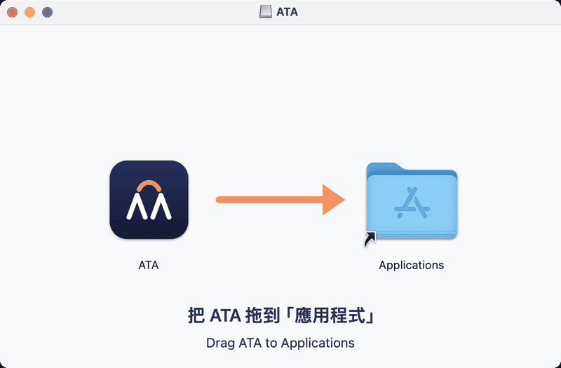
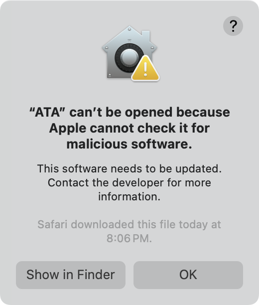
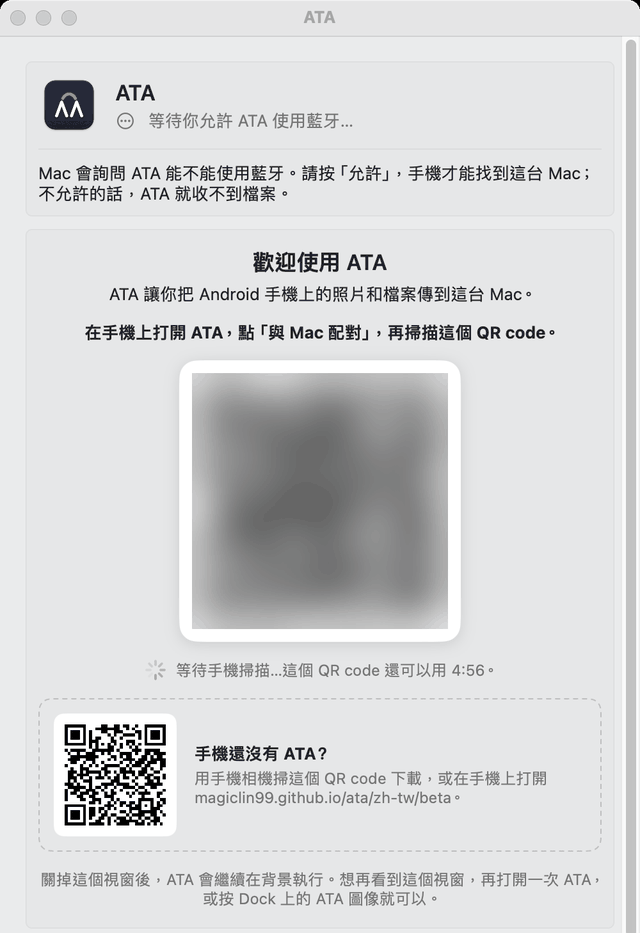
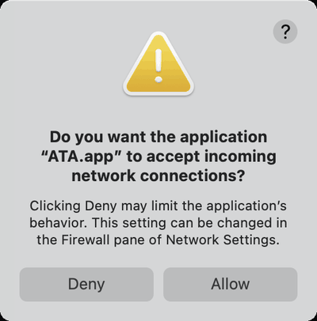

在 Mac 上安裝 ATA
大約兩分鐘。第一次打開 ATA 時，Mac 會跳出一個安全提醒，這是正常的，第 3 步會告訴你該按哪裡。
需要 macOS 14 以上。不確定的話：點螢幕左上角的蘋果選單 →「關於這台 Mac」就能看到。
1. 下載
免費。macOS 14 以上的 Mac 都能用。
2. 把 ATA 拖到「應用程式」
打開剛下載的 ATA 檔案（在「下載項目」裡）。在跳出來的視窗裡，照著箭頭，把 ATA 拖到「應用程式」檔案夾上。

如果直接在這個視窗裡打開 ATA，它會請你先把 ATA 移到「應用程式」。
3. 打開 ATA（第一次要允許一下）
打開「應用程式」檔案夾，按兩下 ATA。Mac 會說它無法檢查 ATA。這是因為 ATA 不是從 App Store 下載的，也沒有付費送 Apple 檢查。只要允許一次就好，請照你的 macOS 版本操作：
macOS 14Sonoma
- 會看到這個訊息，按「好」（英文介面是 OK）。

macOS 14 實機截圖（英文介面），中文介面的意思相同。訊息裡說「需要更新」是 Apple 的固定用語，不用理會，你下載的 ATA 就是最新版。 - 在「應用程式」檔案夾裡，按住 Control 鍵點一下 ATA（或按右鍵），選「打開」。
- 會再出現一個類似的訊息，這次有「打開」按鈕，按下去就好。
macOS 15 以上
- 出現訊息時，按「完成」。不要按「丟到垃圾桶」。
- 打開「系統設定」→「隱私權與安全性」，往下捲，在顯示 ATA 已被阻擋的訊息旁邊，按「強制打開」。
- 再按一次「強制打開」，輸入 Mac 的登入密碼（或用 Touch ID）。
macOS 14 的畫面是我們在實機上確認的；macOS 15 的步驟和中文介面的按鈕名稱依照 Apple 的官方說明，還沒有在實機上確認過。如果你看到的字不一樣，請告訴我們。找不到「強制打開」的話，再按兩下 ATA，然後回來看（這個按鈕只會出現大約一小時）。
4. 和手機配對
ATA 打開時，畫面上就已經有一個 QR code。

- Mac 詢問 ATA 能不能使用藍牙時，按「允許」。
- 在手機上打開 ATA，點「與 Mac 配對」，允許它詢問的權限，再掃描大的 QR code。手機還沒有 ATA 的話，用手機相機掃小的 QR code 就能下載。
- 接著如果 Mac 詢問是否讓 ATA「接受傳入的網路連線」，按「允許」。只有 Mac 的防火牆開著時才會問。

macOS 14 實機截圖（英文介面，右邊的「Allow」就是「允許」）。
完成了！試試看：在手機上打開一張照片，按「分享」→「傳到 Mac」，照片就會出現在 Mac 的「下載項目」裡。（第一次可能要在分享選單的「更多」裡才找得到「傳到 Mac」。）
讓 ATA 隨時準備好
- 配對第一支手機時，ATA 會幫你打開「登入時打開」，Mac 重新開機後就會自己準備好。不想要的話，可以在 ATA 視窗裡關掉。
- 關掉 ATA 視窗沒關係，它會繼續在背景執行。想再看到視窗，按 Dock 上的 ATA 圖像就可以。
另一種方法：用「終端機」安裝（不會跳安全提醒）
如果你不排斥輸入一行指令，用這個方法安裝就不會出現第 3 步的安全提醒。
- 打開「終端機」：按 Command + 空白鍵，輸入「終端機」（或 Terminal），按 return。
- 複製下面這一行，貼到終端機裡，按 return：
curl -fsSL https://github.com/magiclin99/ata/releases/latest/download/install.sh | sh - 如果要求輸入密碼，輸入你登入 Mac 用的密碼（打字時畫面不會顯示任何東西，這是正常的），再按 return。
- ATA 會自己打開，接著做上面的第 4 步。
安裝程式會先確認下載的是原版、沒被改過的 ATA，才會安裝。想了解細節，請看技術細節。
更新與移除
- 更新：ATA 不會自己更新。用第 1 步的按鈕再下載一次，拖到「應用程式」，選「取代」，然後照第 3 步再允許一次。已配對的手機和設定都會保留。（也可以再執行一次上面的終端機指令。）
- 移除：在 ATA 視窗按「結束 ATA」，再把「應用程式」裡的 ATA 拖到垃圾桶。